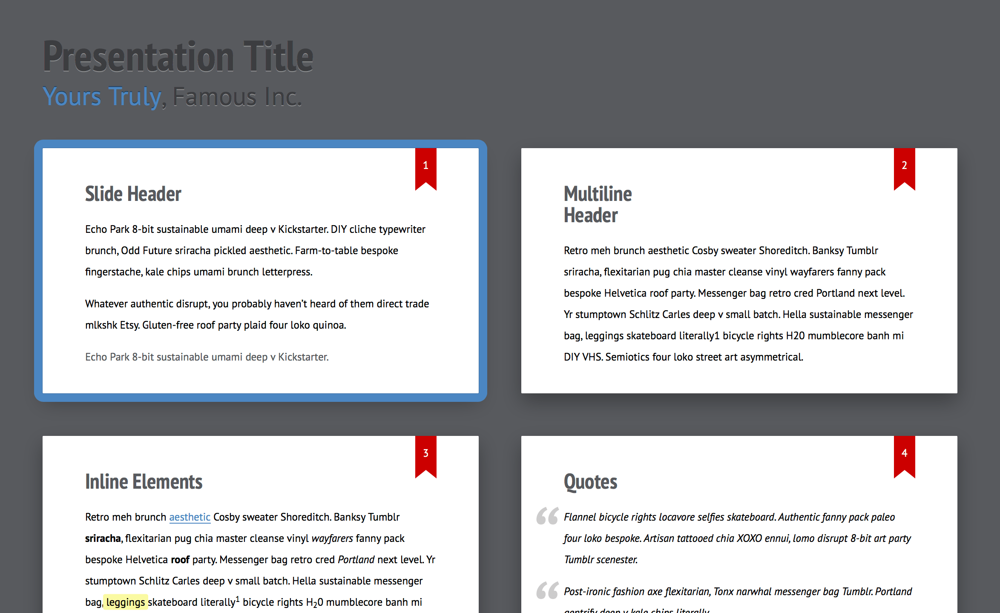

Default theme for the Shower presentation engine. Doesn’t include engine itself. See it in action. Follow @shower_me for support and updates, file an issue if you have any.
Get the Shower template where Ribbon is already included. Download the template archive or create a slide deck via CLI tool. It requires Node.js installed.
npx @shower/cli create
Wait for the installation and choose the ribbon option in the wizard and you’re all set.
All theme’s features are demonstrated in the index.html file, see it live. Use it as a reference while building your presentation. See more detailed features overview.
Ribbon theme supports any slide ratio you want. But it’s optimized for the most common ones: 16×9 and 4×3. It’s 16×9 by default, but you can change it by adjusting --slide-ratio property for .shower, see example in index.html.
You can export slides to PDF by printing it via built-in dialog in Chromium-based browsers or via CLI tool. See printing documentation for more options.
If you want to adjust theme for your needs:
npm install.npm start.To take part in Ribbon development please read contributing guidelines first and file an issue before sending any pull request.
Licensed under MIT License.